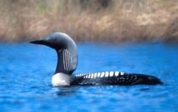
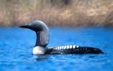

| Pacific Loon | |
|---|---|
|  | |
| Conservation status | |
| Binomial name | |
| Gavia pacifica (Lawrence, 1858) |
| Pacific Loon | |
|---|---|
|  | |
| Conservation status | |
| Binomial name | |
| Gavia pacifica (Lawrence, 1858) |
The Pacific Diver or Pacific Loon (Gavia pacifica), is a medium-sized member of the loon, or diver, family. It may be conspecific with Black-throated Diver/Arctic Loon, which it closely resembles.
It breeds on deep lakes in the tundra region of Alaska and northern Canada as far east as Baffin Island, and in Russia east of the Lena River.
Unlike other loons/divers, this bird may migrate in flocks. It winters at sea, mainly on the Pacific coast, or on large lakes over a much wider range, including China, Japan, North Korea, South Korea, USA and Mexico. It has occurred as a vagrant to Greenland, Hong Kong, Great Britain, Spain and Finland.[2]
Breeding adults are like a smaller sleeker version of Great Northern Diver/Common Loon. They have a grey head, black throat, white underparts and chequered black-and-white mantle. Non-breeding plumage is drabber with the chin and foreneck white. Its bill is grey or whitish and dagger-shaped. In all plumages, lack of a white flank patch distinguishes this species from the otherwise very similar Black-throated Diver/Arctic Loon.
This species, like all divers/loons, is a specialist fish-eater, catching its prey underwater. It flies with neck outstretched.
The call is a yodelling high-pitched wailing, as well as harsh growls and barks.

{kind=link}
{kind=link}
{kind=link}